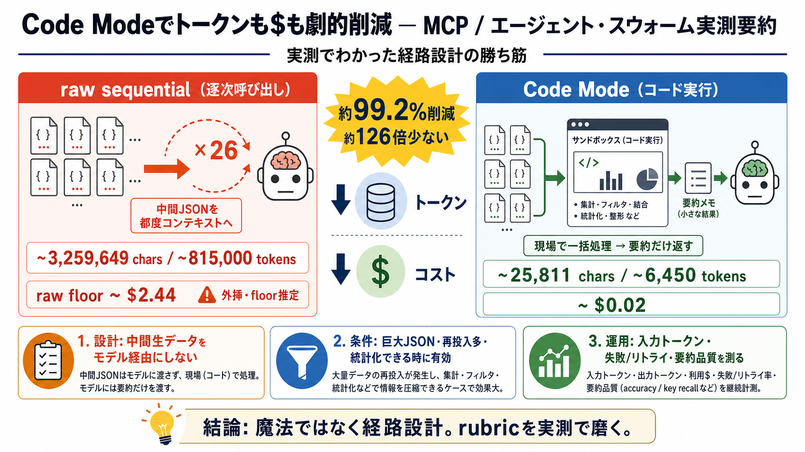

Cutting MCP Tool-Call Token Costs by 50%+ with Code Mode - DEV Community
# Cutting MCP Tool-Call Token Costs by 50%+ with Code Mode. Code Mode trims token usage 50%+ by letting the model write …

02 / 16
03 / 16
04 / 16
05 / 16
06 / 16
07 / 16
08 / 16
09 / 16
10 / 16
11 / 16
12 / 16
13 / 16
# Cutting MCP Tool-Call Token Costs by 50%+ with Code Mode. Code Mode trims token usage 50%+ by letting the model write …
Anthropic cut a Google Drive to Salesforce workflow from ~150,000 to ~2,000 tokens, a 98.7% drop. → Cloudflare wrapped i…
Learn about the efficient method for agents to call MCP functions by writing code, as detailed by Anthropic and Cloudfla…
# Code Mode: give agents an entire API in 1,000 tokens. Model Context Protocol (MCP) has become the standard way for AI …
# Anthropic API Pricing: Official Token Rates for Every Claude Model (2026). Haiku 4.5 starts at $1/1M input tokens. ###…